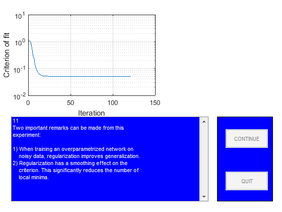

close all
StopDemo=0;
figure
guihand=gcf;
for k=1:1,
[guihand,edmulti,contbut,quitbut]=pmnshow;
set(guihand,'Name','Demonstration of regularization');
s0='1';
s1='In this demo it is shown how regularization by simple';
s2='weight decay might be of help when dealing with';
s3='overparametrization in neural networks.';
s4=[];
s5='The problem, which will be the subject of our';
s6='investigation, is to use a neural network for fitting';
s7='the underlying sine wave from the points marked';
s8='''training data.''';
smat=str2mat(s0,s1,s2,s3,s4,s5,s6,s7,s8);
load('dataSetofSpam.mat');
PHI1=trainData;
Y1=trainlabel;
PHI2=testData;
Y2=testlabel;
PHI1=PHI1';
PHI2=PHI2';
Y1=Y1';
Y2=Y2';
sub1=subplot('position',[0.1 0.55 0.38 0.38]);
plot(PHI1,Y1,'+');
set(gca,'Xlim',[min(PHI1(:)) max(PHI1(:))]);
title('Training data');
sub2=subplot('position',[0.57 0.55 0.38 0.38]);
plot(PHI2,Y2,'m+')
set(gca,'Xlim',[min(PHI2(:)) max(PHI2(:))]);
title('Test data');
drawnow
if StopDemo==1, close all, break; end
s0='2';
s1='Let''s begin by training a network with 15';
s2='hidden ''tanh'' units and one linear output unit';
s3='without using regularization.';
smat=str2mat(s0,s1,s2,s3);
NetDef = ['HHHHHHHHHHHHHHHHHHHH'
'L-------------------'];
W1 = rand(20,5);
W2 = rand(1,21);
delete(sub1);
delete(sub2);
sub1=subplot('position',[0.1 0.55 0.45 0.38]);
pmnshow(smat,guihand,edmulti,contbut,quitbut);
if StopDemo==1, close all, break; end
s0='3';
s1=[];
s2=' >> Training process in action!! <<';
s3=[];
s4=[];
s5='We run up to 500 iterations so you may have to';
s6='wait for a while!';
smat=str2mat(s0,s1,s2,s3,s4,s5,s6);
set(edmulti,'String',smat);
drawnow
trparms = settrain;
trparms = settrain(trparms,'maxiter',500);
[W1,W2,NSSEvec,iter,lambda2]=marq(NetDef,W1,W2,PHI1,Y1,trparms);
delete(gca);
subplot('position',[0.1 0.55 0.45 0.38]);
semilogy(NSSEvec);
xlabel('Iteration');
ylabel('Criterion of fit');
grid
s0='4';
s1='Next we compute training error, test error,';
s2='FPE estimate, and LOO estimate to get an idea';
s3='of how well the network fits the curve.';
smat=str2mat(s0,s1,s2,s3);
pmnshow(smat,guihand,edmulti,contbut,quitbut);
if StopDemo==1, close all, break; end
[Yhat,E,NSSE_tr] = nneval(NetDef,W1,W2,PHI1,Y1,1);
[Yhat,E,NSSE_te] = nneval(NetDef,W1,W2,PHI2,Y2,1);
FPE = fpe(NetDef,W1,W2,PHI1,Y1,trparms);
trparms2 = settrain(trparms,'maxiter',0);
ELOO= loo(NetDef,W1,W2,PHI1,Y1,trparms2);
s0='5';
s1=['Training error: ' num2str(NSSE_tr)];
s2=['Test Error: ' num2str(NSSE_te)];
s3=['FPE estimate: ' num2str(FPE)];
s4=['LOO estimate: ' num2str(ELOO)];
smat=str2mat(s0,s1,s2,s3,s4);
pmnshow(smat,guihand,edmulti,contbut,quitbut);
if StopDemo==1, close all, break; end
s0='6';
s1='This result is typical for networks having too many';
s2='weights. The superflous weights will capture';
s3='some of the noise on the training set, leading to';
s4='a poor generalization ability. This phenomenon is';
s5='usually referred to as ''overfitting''';
s6=[];
s7='Let''s try to train with a small weight decay (0.02)';
s8='and see what happens.';
smat=str2mat(s0,s1,s2,s3,s4,s5,s6,s7,s8);
pmnshow(smat,guihand,edmulti,contbut,quitbut);
if StopDemo==1, close all, break; end
s0='7';
s1=[];
s2=' >> Training process in action!! <<';
s3=[];
s4=[];
s5='We run up to 500 iterations so you may have to';
s6='wait for a while!';
smat=str2mat(s0,s1,s2,s3,s4,s5,s6);
set(edmulti,'String',smat);
drawnow
trparms = settrain(trparms,'D',0.02);
[W1,W2,NSSEvec,iter,lambda2]=marq(NetDef,W1,W2,PHI1,Y1,trparms);
delete(gca);
subplot('position',[0.1 0.55 0.45 0.38]);
semilogy(NSSEvec);
xlabel('Iteration');
ylabel('Criterion of fit');
grid
[Yhat,E,NSSE_tr2] = nneval(NetDef,W1,W2,PHI1,Y1,1);
[Yhat,E,NSSE_te2] = nneval(NetDef,W1,W2,PHI2,Y2,1);
trparms2 = settrain(trparms,'maxiter',0);
s0='8';
s1=' No regularization Regularization';
s2=['Training error: ' num2str(NSSE_tr) ' ' num2str(NSSE_tr2) ];
s3=['Test Error: ' num2str(NSSE_te) ' ' num2str(NSSE_te2)];
s6=[];
s7='It looks as if the weight decay actually improved';
s8='generalization.';
smat=str2mat(s0,s1,s2,s3,s4,s5,s6,s7,s8);
pmnshow(smat,guihand,edmulti,contbut,quitbut);
if StopDemo==1, close all, break; end
s0='9';
s1='To really proof the effect of regularization, we';
s2='redo the experiment for 50 different values of the';
s3='weight decay parameter. Also we train the network';
s4='7 times for each weight decay, using different initial';
s5='weights in order to reduce the influence from local';
s6='minima.';
smat=str2mat(s0,s1,s2,s3,s4,s5,s6);
pmnshow(smat,guihand,edmulti,contbut,quitbut);
if StopDemo==1, close all, break; end
s0='11';
s1='Two important remarks can be made from this';
s2='experiment:';
s25=[];
s3='1) When training an overparametrized network on';
s4=' noisy data, regularization improves generalization.';
s5='2) Regularization has a smoothing effect on the';
s6=' criterion. This significantly reduces the number of';
s7=' local minima.';
smat=str2mat(s0,s1,s2,s25,s3,s4,s5,s6,s7);
set(edmulti,'String',smat);
drawnow
TestatingData=PHI2;
save('TestatingData.mat','TestatingData');
save('modelEvaluation.mat','NetDef','PHI1','PHI2','W1','W2','Y1','Y2');
end
Network training started at 14.33.19
iteration # 1 W = 5.400e-02iteration # 2 W = 5.100e-02iteration # 3 W = 5.068e-02iteration # 4 W = 5.059e-02iteration # 5 W = 5.055e-02iteration # 6 W = 5.050e-02iteration # 7 W = 5.050e-02iteration # 8 W = 5.050e-02iteration # 9 W = 5.049e-02iteration # 10 W = 5.049e-02iteration # 11 W = 5.048e-02iteration # 12 W = 5.048e-02iteration # 13 W = 5.048e-02iteration # 14 W = 5.046e-02iteration # 15 W = 5.046e-02iteration # 16 W = 5.045e-02iteration # 17 W = 5.045e-02iteration # 18 W = 5.044e-02iteration # 19 W = 5.043e-02iteration # 20 W = 5.041e-02iteration # 21 W = 5.039e-02iteration # 22 W = 5.036e-02iteration # 23 W = 5.032e-02iteration # 24 W = 5.027e-02iteration # 25 W = 5.020e-02iteration # 26 W = 5.018e-02iteration # 27 W = 4.998e-02iteration # 28 W = 4.992e-02iteration # 29 W = 4.981e-02iteration # 30 W = 4.975e-02iteration # 31 W = 4.972e-02iteration # 32 W = 4.970e-02iteration # 33 W = 4.967e-02iteration # 34 W = 4.966e-02iteration # 35 W = 4.964e-02iteration # 36 W = 4.962e-02iteration # 37 W = 4.961e-02iteration # 38 W = 4.960e-02iteration # 39 W = 4.959e-02iteration # 40 W = 4.958e-02iteration # 41 W = 4.954e-02iteration # 42 W = 4.952e-02iteration # 43 W = 4.951e-02iteration # 44 W = 4.949e-02iteration # 45 W = 4.947e-02iteration # 46 W = 4.946e-02iteration # 47 W = 4.942e-02iteration # 48 W = 4.938e-02iteration # 49 W = 4.933e-02iteration # 50 W = 4.931e-02iteration # 51 W = 4.930e-02iteration # 52 W = 4.930e-02iteration # 53 W = 4.929e-02iteration # 54 W = 4.928e-02iteration # 55 W = 4.928e-02iteration # 56 W = 4.927e-02iteration # 57 W = 4.927e-02iteration # 58 W = 4.926e-02iteration # 59 W = 4.926e-02iteration # 60 W = 4.925e-02iteration # 61 W = 4.924e-02iteration # 62 W = 4.924e-02iteration # 63 W = 4.924e-02iteration # 64 W = 4.922e-02iteration # 65 W = 4.922e-02iteration # 66 W = 4.920e-02iteration # 67 W = 4.918e-02iteration # 68 W = 4.916e-02iteration # 69 W = 4.914e-02iteration # 70 W = 4.911e-02iteration # 71 W = 4.907e-02iteration # 72 W = 4.901e-02iteration # 73 W = 4.894e-02iteration # 74 W = 4.890e-02iteration # 75 W = 4.890e-02iteration # 76 W = 4.883e-02iteration # 77 W = 4.881e-02iteration # 78 W = 4.876e-02iteration # 79 W = 4.874e-02iteration # 80 W = 4.871e-02iteration # 81 W = 4.868e-02iteration # 82 W = 4.865e-02iteration # 83 W = 4.861e-02iteration # 84 W = 4.861e-02iteration # 85 W = 4.857e-02iteration # 86 W = 4.856e-02iteration # 87 W = 4.855e-02iteration # 88 W = 4.854e-02iteration # 89 W = 4.853e-02iteration # 90 W = 4.852e-02iteration # 91 W = 4.852e-02iteration # 92 W = 4.852e-02iteration # 93 W = 4.848e-02iteration # 94 W = 4.848e-02iteration # 95 W = 4.847e-02iteration # 96 W = 4.847e-02iteration # 97 W = 4.847e-02iteration # 98 W = 4.845e-02iteration # 99 W = 4.845e-02iteration # 100 W = 4.845e-02iteration # 101 W = 4.844e-02iteration # 102 W = 4.844e-02iteration # 103 W = 4.843e-02iteration # 104 W = 4.843e-02iteration # 105 W = 4.843e-02iteration # 106 W = 4.842e-02iteration # 107 W = 4.842e-02iteration # 108 W = 4.841e-02iteration # 109 W = 4.841e-02iteration # 110 W = 4.841e-02iteration # 111 W = 4.840e-02iteration # 112 W = 4.840e-02iteration # 113 W = 4.839e-02iteration # 114 W = 4.839e-02iteration # 115 W = 4.838e-02iteration # 116 W = 4.838e-02iteration # 117 W = 4.836e-02iteration # 118 W = 4.834e-02iteration # 119 W = 4.832e-02iteration # 120 W = 4.830e-02iteration # 121 W = 4.827e-02iteration # 122 W = 4.823e-02iteration # 123 W = 4.819e-02iteration # 124 W = 4.815e-02iteration # 125 W = 4.811e-02iteration # 126 W = 4.807e-02iteration # 127 W = 4.803e-02iteration # 128 W = 4.799e-02iteration # 129 W = 4.795e-02iteration # 130 W = 4.791e-02iteration # 131 W = 4.787e-02iteration # 132 W = 4.784e-02iteration # 133 W = 4.781e-02iteration # 134 W = 4.774e-02iteration # 135 W = 4.772e-02iteration # 136 W = 4.766e-02iteration # 137 W = 4.762e-02iteration # 138 W = 4.760e-02iteration # 139 W = 4.752e-02iteration # 140 W = 4.746e-02iteration # 141 W = 4.740e-02iteration # 142 W = 4.733e-02iteration # 143 W = 4.727e-02iteration # 144 W = 4.721e-02iteration # 145 W = 4.716e-02iteration # 146 W = 4.710e-02iteration # 147 W = 4.703e-02iteration # 148 W = 4.698e-02iteration # 149 W = 4.694e-02iteration # 150 W = 4.692e-02iteration # 151 W = 4.690e-02iteration # 152 W = 4.687e-02iteration # 153 W = 4.684e-02iteration # 154 W = 4.680e-02iteration # 155 W = 4.676e-02iteration # 156 W = 4.672e-02iteration # 157 W = 4.668e-02iteration # 158 W = 4.664e-02iteration # 159 W = 4.661e-02iteration # 160 W = 4.657e-02iteration # 161 W = 4.657e-02iteration # 162 W = 4.645e-02iteration # 163 W = 4.642e-02iteration # 164 W = 4.631e-02iteration # 165 W = 4.620e-02iteration # 166 W = 4.611e-02iteration # 167 W = 4.606e-02iteration # 168 W = 4.602e-02iteration # 169 W = 4.600e-02iteration # 170 W = 4.597e-02iteration # 171 W = 4.594e-02iteration # 172 W = 4.591e-02iteration # 173 W = 4.588e-02iteration # 174 W = 4.584e-02iteration # 175 W = 4.582e-02iteration # 176 W = 4.579e-02iteration # 177 W = 4.577e-02iteration # 178 W = 4.574e-02iteration # 179 W = 4.570e-02iteration # 180 W = 4.565e-02iteration # 181 W = 4.560e-02iteration # 182 W = 4.555e-02iteration # 183 W = 4.553e-02iteration # 184 W = 4.550e-02iteration # 185 W = 4.550e-02iteration # 186 W = 4.547e-02iteration # 187 W = 4.546e-02iteration # 188 W = 4.546e-02iteration # 189 W = 4.545e-02iteration # 190 W = 4.543e-02iteration # 191 W = 4.542e-02iteration # 192 W = 4.542e-02iteration # 193 W = 4.541e-02iteration # 194 W = 4.540e-02iteration # 195 W = 4.540e-02iteration # 196 W = 4.539e-02iteration # 197 W = 4.538e-02iteration # 198 W = 4.537e-02iteration # 199 W = 4.536e-02iteration # 200 W = 4.535e-02iteration # 201 W = 4.534e-02iteration # 202 W = 4.533e-02iteration # 203 W = 4.532e-02iteration # 204 W = 4.530e-02iteration # 205 W = 4.529e-02iteration # 206 W = 4.528e-02iteration # 207 W = 4.527e-02iteration # 208 W = 4.526e-02iteration # 209 W = 4.525e-02iteration # 210 W = 4.523e-02iteration # 211 W = 4.522e-02iteration # 212 W = 4.520e-02iteration # 213 W = 4.519e-02iteration # 214 W = 4.517e-02iteration # 215 W = 4.515e-02iteration # 216 W = 4.514e-02iteration # 217 W = 4.512e-02iteration # 218 W = 4.512e-02iteration # 219 W = 4.507e-02iteration # 220 W = 4.506e-02iteration # 221 W = 4.503e-02iteration # 222 W = 4.500e-02iteration # 223 W = 4.497e-02iteration # 224 W = 4.495e-02iteration # 225 W = 4.492e-02iteration # 226 W = 4.489e-02iteration # 227 W = 4.487e-02iteration # 228 W = 4.485e-02iteration # 229 W = 4.484e-02iteration # 230 W = 4.479e-02iteration # 231 W = 4.476e-02iteration # 232 W = 4.472e-02iteration # 233 W = 4.469e-02iteration # 234 W = 4.467e-02iteration # 235 W = 4.463e-02iteration # 236 W = 4.461e-02iteration # 237 W = 4.457e-02iteration # 238 W = 4.454e-02iteration # 239 W = 4.450e-02iteration # 240 W = 4.447e-02iteration # 241 W = 4.446e-02iteration # 242 W = 4.443e-02iteration # 243 W = 4.440e-02iteration # 244 W = 4.437e-02iteration # 245 W = 4.436e-02iteration # 246 W = 4.434e-02iteration # 247 W = 4.432e-02iteration # 248 W = 4.430e-02iteration # 249 W = 4.428e-02iteration # 250 W = 4.426e-02iteration # 251 W = 4.423e-02iteration # 252 W = 4.421e-02iteration # 253 W = 4.419e-02iteration # 254 W = 4.417e-02iteration # 255 W = 4.415e-02iteration # 256 W = 4.413e-02iteration # 257 W = 4.412e-02iteration # 258 W = 4.406e-02iteration # 259 W = 4.404e-02iteration # 260 W = 4.399e-02iteration # 261 W = 4.394e-02iteration # 262 W = 4.391e-02iteration # 263 W = 4.391e-02iteration # 264 W = 4.390e-02iteration # 265 W = 4.390e-02iteration # 266 W = 4.389e-02iteration # 267 W = 4.388e-02iteration # 268 W = 4.386e-02iteration # 269 W = 4.384e-02iteration # 270 W = 4.380e-02iteration # 271 W = 4.377e-02iteration # 272 W = 4.375e-02iteration # 273 W = 4.371e-02iteration # 274 W = 4.367e-02iteration # 275 W = 4.367e-02iteration # 276 W = 4.365e-02iteration # 277 W = 4.363e-02iteration # 278 W = 4.359e-02iteration # 279 W = 4.353e-02iteration # 280 W = 4.350e-02iteration # 281 W = 4.346e-02iteration # 282 W = 4.344e-02iteration # 283 W = 4.343e-02iteration # 284 W = 4.341e-02iteration # 285 W = 4.340e-02iteration # 286 W = 4.340e-02iteration # 287 W = 4.339e-02iteration # 288 W = 4.339e-02iteration # 289 W = 4.338e-02iteration # 290 W = 4.338e-02iteration # 291 W = 4.338e-02iteration # 292 W = 4.337e-02iteration # 293 W = 4.337e-02iteration # 294 W = 4.337e-02iteration # 295 W = 4.336e-02iteration # 296 W = 4.336e-02iteration # 297 W = 4.336e-02iteration # 298 W = 4.335e-02iteration # 299 W = 4.335e-02iteration # 300 W = 4.334e-02iteration # 301 W = 4.334e-02iteration # 302 W = 4.334e-02iteration # 303 W = 4.334e-02iteration # 304 W = 4.333e-02iteration # 305 W = 4.332e-02iteration # 306 W = 4.332e-02iteration # 307 W = 4.332e-02iteration # 308 W = 4.330e-02iteration # 309 W = 4.330e-02iteration # 310 W = 4.329e-02iteration # 311 W = 4.328e-02iteration # 312 W = 4.327e-02iteration # 313 W = 4.326e-02iteration # 314 W = 4.325e-02iteration # 315 W = 4.324e-02iteration # 316 W = 4.323e-02iteration # 317 W = 4.322e-02iteration # 318 W = 4.322e-02iteration # 319 W = 4.321e-02iteration # 320 W = 4.320e-02iteration # 321 W = 4.318e-02iteration # 322 W = 4.318e-02iteration # 323 W = 4.317e-02iteration # 324 W = 4.317e-02iteration # 325 W = 4.316e-02iteration # 326 W = 4.316e-02iteration # 327 W = 4.315e-02iteration # 328 W = 4.314e-02iteration # 329 W = 4.314e-02iteration # 330 W = 4.313e-02iteration # 331 W = 4.313e-02iteration # 332 W = 4.312e-02iteration # 333 W = 4.312e-02iteration # 334 W = 4.311e-02iteration # 335 W = 4.310e-02iteration # 336 W = 4.310e-02iteration # 337 W = 4.309e-02iteration # 338 W = 4.309e-02iteration # 339 W = 4.308e-02iteration # 340 W = 4.307e-02iteration # 341 W = 4.306e-02iteration # 342 W = 4.305e-02iteration # 343 W = 4.304e-02iteration # 344 W = 4.301e-02iteration # 345 W = 4.300e-02iteration # 346 W = 4.297e-02iteration # 347 W = 4.296e-02iteration # 348 W = 4.290e-02iteration # 349 W = 4.288e-02iteration # 350 W = 4.283e-02iteration # 351 W = 4.278e-02iteration # 352 W = 4.277e-02iteration # 353 W = 4.266e-02iteration # 354 W = 4.260e-02iteration # 355 W = 4.256e-02iteration # 356 W = 4.246e-02iteration # 357 W = 4.244e-02iteration # 358 W = 4.234e-02iteration # 359 W = 4.229e-02iteration # 360 W = 4.227e-02iteration # 361 W = 4.226e-02iteration # 362 W = 4.226e-02iteration # 363 W = 4.225e-02iteration # 364 W = 4.225e-02iteration # 365 W = 4.224e-02iteration # 366 W = 4.224e-02iteration # 367 W = 4.223e-02iteration # 368 W = 4.223e-02iteration # 369 W = 4.222e-02iteration # 370 W = 4.222e-02iteration # 371 W = 4.221e-02iteration # 372 W = 4.221e-02iteration # 373 W = 4.220e-02iteration # 374 W = 4.220e-02iteration # 375 W = 4.219e-02iteration # 376 W = 4.219e-02iteration # 377 W = 4.219e-02iteration # 378 W = 4.218e-02iteration # 379 W = 4.218e-02iteration # 380 W = 4.217e-02iteration # 381 W = 4.217e-02iteration # 382 W = 4.216e-02iteration # 383 W = 4.216e-02iteration # 384 W = 4.216e-02iteration # 385 W = 4.215e-02iteration # 386 W = 4.215e-02iteration # 387 W = 4.215e-02iteration # 388 W = 4.214e-02iteration # 389 W = 4.214e-02iteration # 390 W = 4.214e-02iteration # 391 W = 4.213e-02iteration # 392 W = 4.213e-02iteration # 393 W = 4.212e-02iteration # 394 W = 4.211e-02iteration # 395 W = 4.210e-02iteration # 396 W = 4.210e-02iteration # 397 W = 4.209e-02iteration # 398 W = 4.208e-02iteration # 399 W = 4.208e-02iteration # 400 W = 4.208e-02iteration # 401 W = 4.207e-02iteration # 402 W = 4.207e-02iteration # 403 W = 4.207e-02iteration # 404 W = 4.206e-02iteration # 405 W = 4.206e-02iteration # 406 W = 4.205e-02iteration # 407 W = 4.205e-02iteration # 408 W = 4.205e-02iteration # 409 W = 4.204e-02iteration # 410 W = 4.204e-02iteration # 411 W = 4.204e-02iteration # 412 W = 4.204e-02iteration # 413 W = 4.203e-02iteration # 414 W = 4.203e-02iteration # 415 W = 4.203e-02iteration # 416 W = 4.203e-02iteration # 417 W = 4.202e-02iteration # 418 W = 4.202e-02iteration # 419 W = 4.202e-02iteration # 420 W = 4.201e-02iteration # 421 W = 4.201e-02iteration # 422 W = 4.201e-02iteration # 423 W = 4.201e-02iteration # 424 W = 4.200e-02iteration # 425 W = 4.200e-02iteration # 426 W = 4.200e-02iteration # 427 W = 4.200e-02iteration # 428 W = 4.200e-02iteration # 429 W = 4.199e-02iteration # 430 W = 4.199e-02iteration # 431 W = 4.199e-02iteration # 432 W = 4.199e-02iteration # 433 W = 4.198e-02iteration # 434 W = 4.198e-02iteration # 435 W = 4.198e-02iteration # 436 W = 4.198e-02iteration # 437 W = 4.197e-02iteration # 438 W = 4.197e-02iteration # 439 W = 4.197e-02iteration # 440 W = 4.196e-02iteration # 441 W = 4.196e-02iteration # 442 W = 4.196e-02iteration # 443 W = 4.196e-02iteration # 444 W = 4.195e-02iteration # 445 W = 4.195e-02iteration # 446 W = 4.195e-02iteration # 447 W = 4.194e-02iteration # 448 W = 4.194e-02iteration # 449 W = 4.194e-02iteration # 450 W = 4.193e-02iteration # 451 W = 4.193e-02iteration # 452 W = 4.192e-02iteration # 453 W = 4.192e-02iteration # 454 W = 4.192e-02iteration # 455 W = 4.191e-02iteration # 456 W = 4.191e-02iteration # 457 W = 4.190e-02iteration # 458 W = 4.190e-02iteration # 459 W = 4.189e-02iteration # 460 W = 4.188e-02iteration # 461 W = 4.187e-02iteration # 462 W = 4.186e-02iteration # 463 W = 4.185e-02iteration # 464 W = 4.183e-02iteration # 465 W = 4.183e-02iteration # 466 W = 4.178e-02iteration # 467 W = 4.176e-02iteration # 468 W = 4.175e-02iteration # 469 W = 4.174e-02iteration # 470 W = 4.173e-02iteration # 471 W = 4.171e-02iteration # 472 W = 4.171e-02iteration # 473 W = 4.168e-02iteration # 474 W = 4.167e-02iteration # 475 W = 4.165e-02iteration # 476 W = 4.164e-02iteration # 477 W = 4.163e-02iteration # 478 W = 4.162e-02iteration # 479 W = 4.161e-02iteration # 480 W = 4.160e-02iteration # 481 W = 4.159e-02iteration # 482 W = 4.157e-02iteration # 483 W = 4.156e-02iteration # 484 W = 4.154e-02iteration # 485 W = 4.153e-02iteration # 486 W = 4.152e-02iteration # 487 W = 4.150e-02iteration # 488 W = 4.149e-02iteration # 489 W = 4.148e-02iteration # 490 W = 4.146e-02iteration # 491 W = 4.144e-02iteration # 492 W = 4.142e-02iteration # 493 W = 4.140e-02iteration # 494 W = 4.138e-02iteration # 495 W = 4.135e-02iteration # 496 W = 4.131e-02iteration # 497 W = 4.128e-02iteration # 498 W = 4.125e-02iteration # 499 W = 4.122e-02iteration # 500 W = 4.119e-02
Network training ended at 14.33.20
Network training started at 14.33.23
iteration # 1 W = 1.140e+00iteration # 2 W = 1.057e+00iteration # 3 W = 9.139e-01iteration # 4 W = 6.930e-01iteration # 5 W = 4.275e-01iteration # 6 W = 2.768e-01iteration # 7 W = 2.379e-01iteration # 8 W = 1.384e-01iteration # 9 W = 1.057e-01iteration # 10 W = 9.004e-02iteration # 11 W = 7.562e-02iteration # 12 W = 7.051e-02iteration # 13 W = 6.115e-02iteration # 14 W = 6.014e-02iteration # 15 W = 5.606e-02iteration # 16 W = 5.465e-02iteration # 17 W = 5.360e-02iteration # 18 W = 5.300e-02iteration # 19 W = 5.264e-02iteration # 20 W = 5.237e-02iteration # 21 W = 5.213e-02iteration # 22 W = 5.188e-02iteration # 23 W = 5.159e-02iteration # 24 W = 5.129e-02iteration # 25 W = 5.106e-02iteration # 26 W = 5.091e-02iteration # 27 W = 5.083e-02iteration # 28 W = 5.078e-02iteration # 29 W = 5.073e-02iteration # 30 W = 5.071e-02iteration # 31 W = 5.069e-02iteration # 32 W = 5.068e-02iteration # 33 W = 5.068e-02iteration # 34 W = 5.068e-02iteration # 35 W = 5.068e-02iteration # 36 W = 5.067e-02iteration # 37 W = 5.067e-02iteration # 38 W = 5.067e-02iteration # 39 W = 5.067e-02iteration # 40 W = 5.067e-02iteration # 41 W = 5.067e-02iteration # 42 W = 5.067e-02iteration # 43 W = 5.067e-02iteration # 44 W = 5.067e-02iteration # 45 W = 5.067e-02iteration # 46 W = 5.067e-02iteration # 47 W = 5.067e-02iteration # 48 W = 5.067e-02iteration # 49 W = 5.067e-02iteration # 50 W = 5.067e-02iteration # 51 W = 5.067e-02iteration # 52 W = 5.067e-02iteration # 53 W = 5.067e-02iteration # 54 W = 5.067e-02iteration # 55 W = 5.067e-02iteration # 56 W = 5.067e-02iteration # 57 W = 5.067e-02iteration # 58 W = 5.067e-02iteration # 59 W = 5.067e-02iteration # 60 W = 5.067e-02iteration # 61 W = 5.067e-02iteration # 62 W = 5.067e-02iteration # 63 W = 5.067e-02iteration # 64 W = 5.067e-02iteration # 65 W = 5.067e-02iteration # 66 W = 5.067e-02iteration # 67 W = 5.067e-02iteration # 68 W = 5.067e-02iteration # 69 W = 5.067e-02iteration # 70 W = 5.067e-02iteration # 71 W = 5.067e-02iteration # 72 W = 5.067e-02iteration # 73 W = 5.067e-02iteration # 74 W = 5.067e-02iteration # 75 W = 5.067e-02iteration # 76 W = 5.067e-02iteration # 77 W = 5.067e-02iteration # 78 W = 5.067e-02iteration # 79 W = 5.067e-02iteration # 80 W = 5.067e-02iteration # 81 W = 5.067e-02iteration # 82 W = 5.067e-02iteration # 83 W = 5.067e-02iteration # 84 W = 5.067e-02iteration # 85 W = 5.067e-02iteration # 86 W = 5.067e-02iteration # 87 W = 5.067e-02iteration # 88 W = 5.067e-02iteration # 89 W = 5.067e-02iteration # 90 W = 5.067e-02iteration # 91 W = 5.067e-02iteration # 92 W = 5.067e-02iteration # 93 W = 5.067e-02iteration # 94 W = 5.067e-02iteration # 95 W = 5.067e-02iteration # 96 W = 5.067e-02iteration # 97 W = 5.067e-02iteration # 98 W = 5.067e-02iteration # 99 W = 5.067e-02iteration # 100 W = 5.067e-02iteration # 101 W = 5.067e-02iteration # 102 W = 5.067e-02iteration # 103 W = 5.067e-02iteration # 104 W = 5.067e-02iteration # 105 W = 5.067e-02iteration # 106 W = 5.067e-02iteration # 107 W = 5.067e-02iteration # 108 W = 5.067e-02iteration # 109 W = 5.067e-02iteration # 110 W = 5.067e-02iteration # 111 W = 5.067e-02iteration # 112 W = 5.067e-02iteration # 113 W = 5.067e-02iteration # 114 W = 5.067e-02iteration # 115 W = 5.067e-02iteration # 116 W = 5.067e-02iteration # 117 W = 5.067e-02iteration # 118 W = 5.067e-02iteration # 119 W = 5.067e-02iteration # 120 W = 5.067e-02iteration # 121 W = 5.067e-02
Network training ended at 14.33.23
